Tsuwano, Shimane: things to do, food and stays
Tsuwano · Shimane
Tsuwano
Highlighted on the Shimane map.

Stay
津和野温泉 ゆとりろ津和野
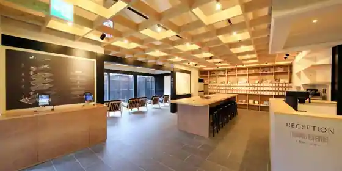
Tsuwano Onsen Yutoriro Tsuwano
Inn at Tsuwano Onsen in Ushirodaro, Tsuwano.
若槻 津和野（旧 Wakatsuki tsuwano 離れ）
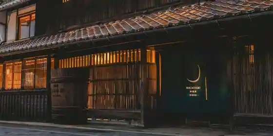
Wakatsuki Tsuwano (Kyu Wakatsuki tsuwano Hanare)
津和野町家ステイ上新丁
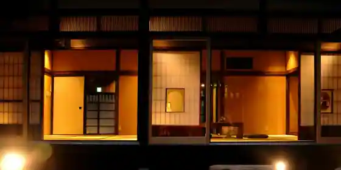
Tsuwano Choka Sutei Joshin Cho
津和野町家ステイ戎丁
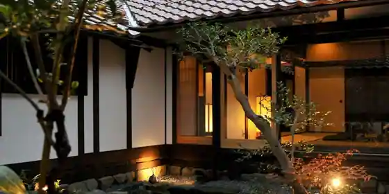
Tsuwano Choka Sutei Ju Cho
Inn in Ushiroda, Tsuwano; 5-minute walk from Tsuwano Station.
民宿みやけ
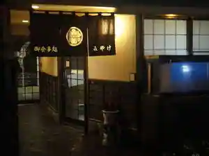
Minshuku Miyake
Family-run minshuku in Ushirodaro, Tsuwano with local seafood dinners.
星旅館
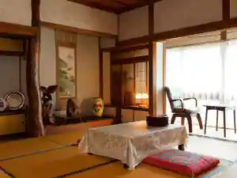
Hoshi Ryokan
駅前ビジネスホテルつわの
Ekimae Business Hotel Tsuwano
Hotel in Ushirodai, Tsuwano with business travelers.
のれん宿 明月
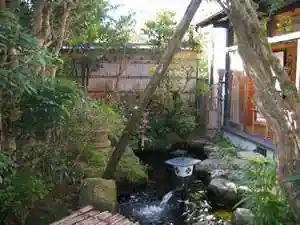
Noren Yado Meigetsu
若さぎの宿
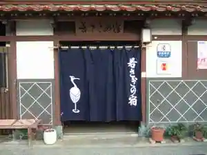
Wakasa Gino Yado
オーベルジュ 四季の詩
Oberuju Shiki No Shi
Dining
美加登家
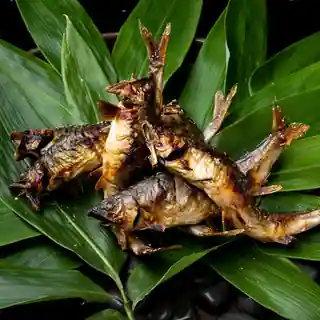
Mika To Ie
山田竹風軒本店 本町店
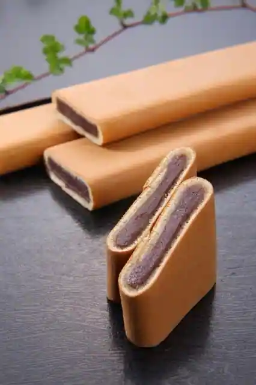
Yamada Chikufu Ken Hon Honcho
みのや
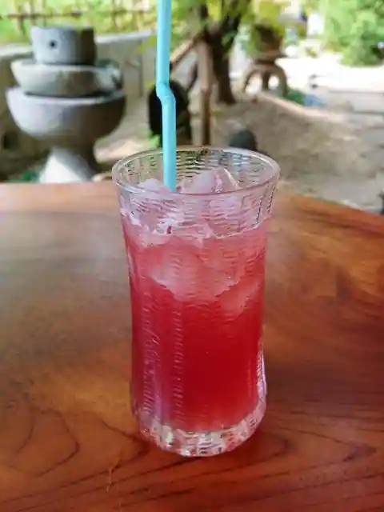
Minoya
田舎もん
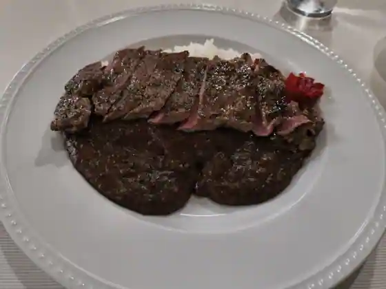
Inaka Mon
和菓子処 三松堂 津和野本店
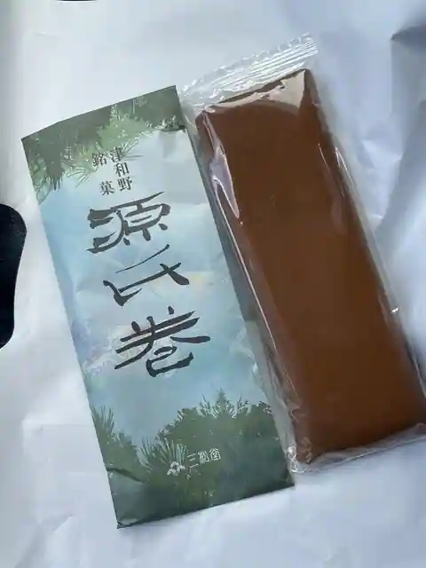
Wagashi Tokoro Mimatsu Do Tsuwano Hon
沙羅の木 本店
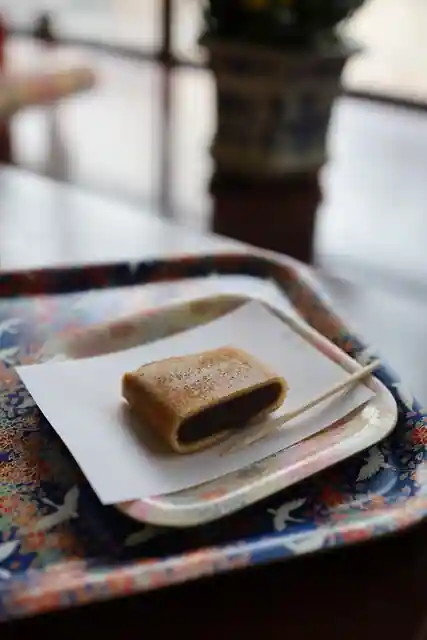
Sara No Ki Hon
ピノロッソ
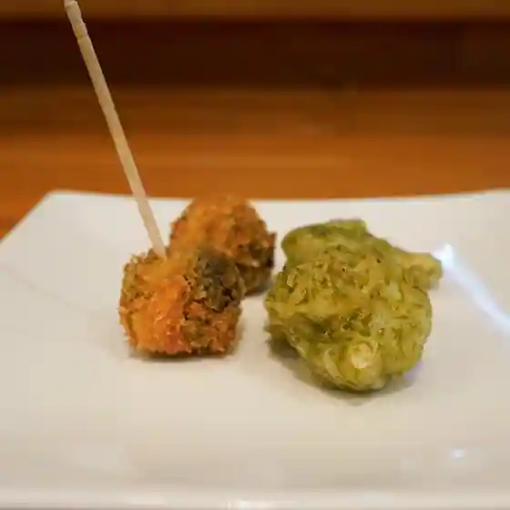
Pinorosso
沙羅の木 松韻亭
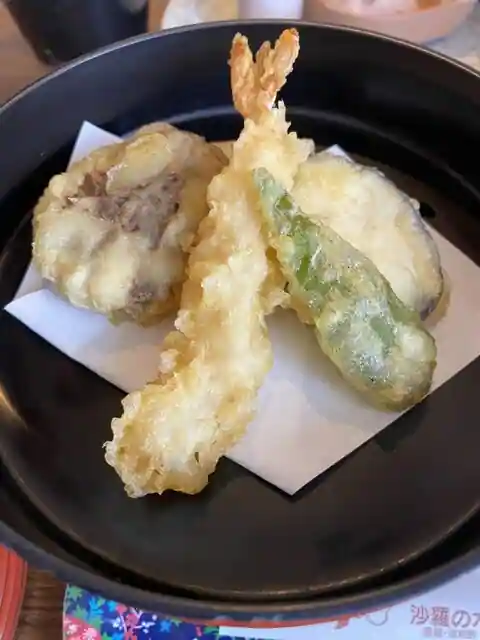
Sara No Ki Shoin Tei
美松食堂
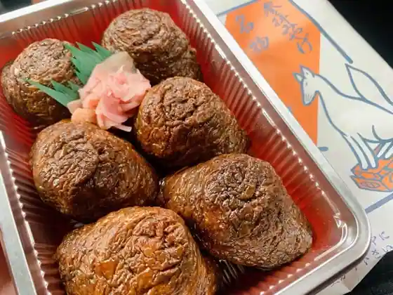
Bisho Shokudo
アルチジャーノ
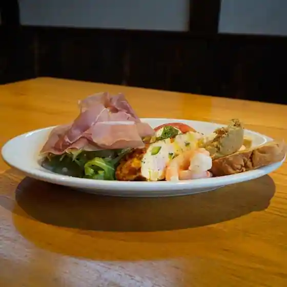
Aruchijano
ゆとりろ津和野
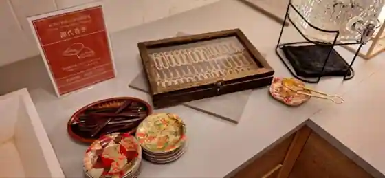
Yutoriro Tsuwano
元祖源氏巻総本舗 宗家
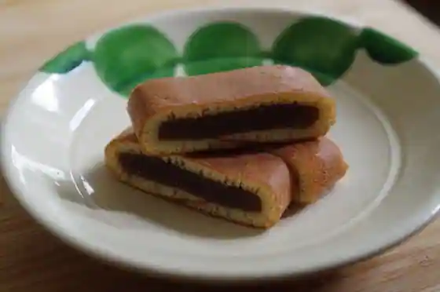
Ganso Genji Kan So Honpo Soke
福寿し
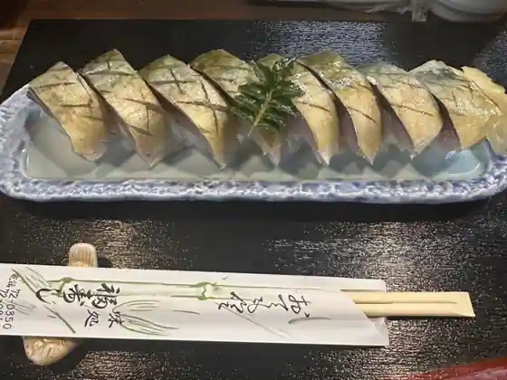
Fukuju Shi
千舎ノ木
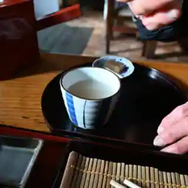
Sen Sha No Ki
三松堂 菓心庵
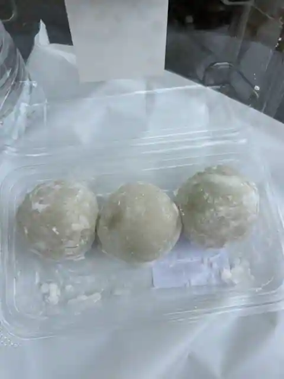
Mimatsu Do Ka Kokoro Iori
道の駅 津和野温泉 なごみの里
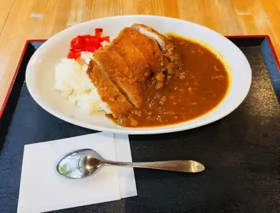
Michi No Eki Tsuwano Onsen Nagomino Sato
山田竹風軒 新店
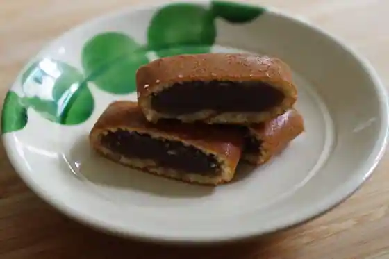
Yamada Chikufu Ken Shin
香味園 上領茶舗
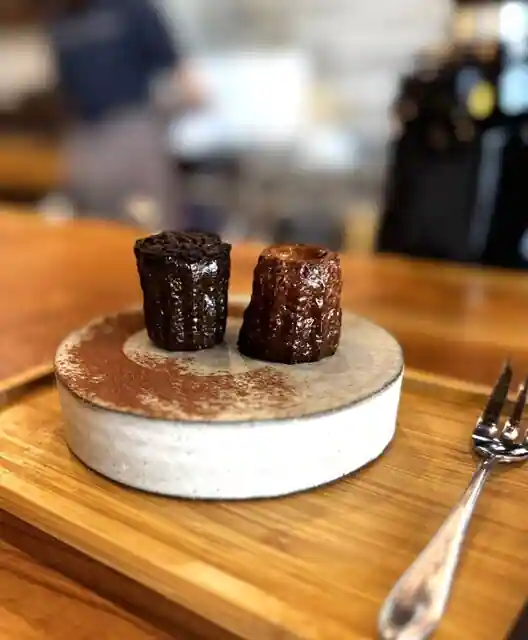
Komi Sono Agekubi Chaho
遊亀
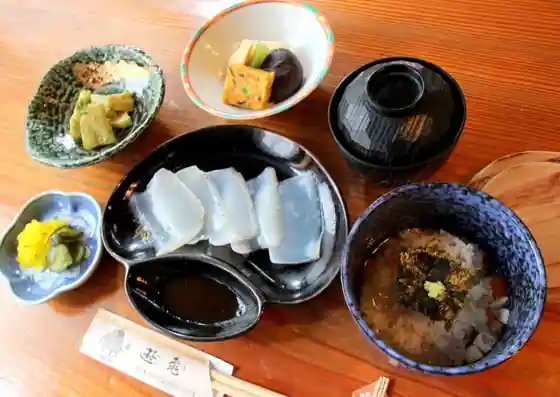
Yuki
沙羅の木 茶屋
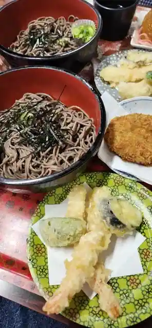
Sara No Ki Chaya
糧 72レシピ プロジェクト
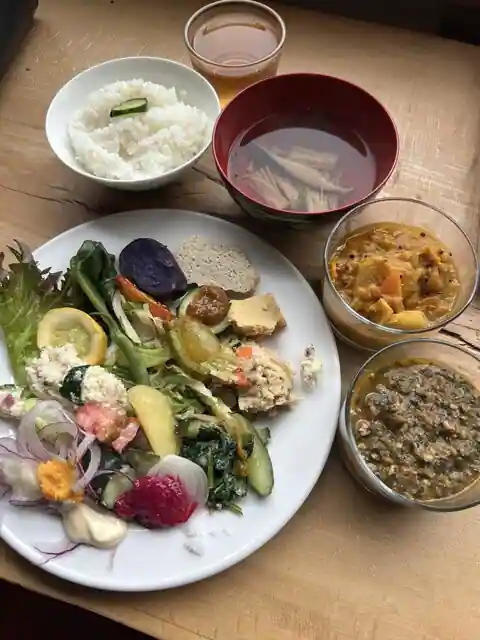
Kate 72 Reshipi Purojiekuto
チルチルミチル
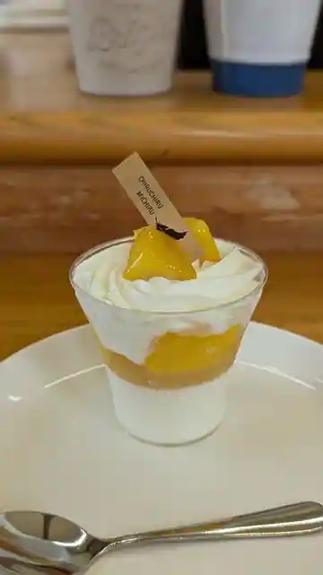
Chiruchirumichiru
なにわ
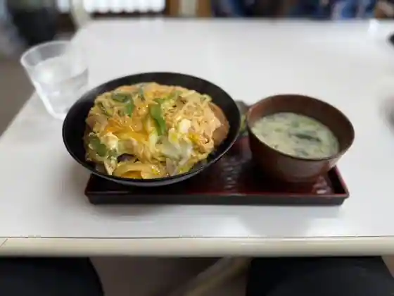
Naniwa
あぜみちレストハウス
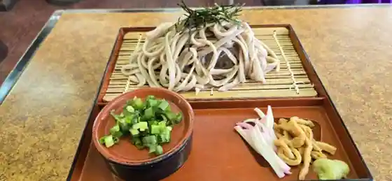
Azemichi Resuto House
Sights
Taiko Tani Ine Sei Shrine

Tsuwano Castle Ruins
Tsuwano Dono Town Tori

Tsuwano Castle Ruins Kanko Rifuto

Mori Ogai Memorial Museum

Tsuwano Washi Hara Hachiman Shrine Yabusame Shinji
Anno Mitsumasa Art Museum
Genji Kan Teyaki Ki Experience
Roadside Station Tsuwano Onsen Nagomi Village
Hihara Tenmondai
Otome Toge Maria Seido
Tsuwano Onsen
Tsuwano Katorikku Kyokai
Roadside Station (Shirukuei Nichihara)
Sagimai Shinji (Gion Matsuri)
Mori Ogai Kyutaku
Genji Kan
Kyu Hori Shi Garden
Washi Hara Hachiman Shrine
Uzume Meshi
Rentasaikuru (Tsuwano)
Sara no Ki
Chiisana Noka Resutoran Chisha no Ki
Kate (Ishoku no Manabi Sha Kyu Hatake Sako Byoin)
Roadside Station Tsuwano Onsen Nagomi Village Iwami Kagura Teiki Koen
O Shokuji Tokoro Mi no Ya
Kappo Mika to Ie
SL Yamaguchi Go
Tsuwano Nippon Isan Center
Eimei Tera
Komi Sono Agekubi Chaho
Mori Juku Art Museum
Fumoto Ko Tsutsuji Village
Hori Garden no Autumn Leaves
Wagashi Tokoro Mimatsu Do Tsuwano Main Shop
Yutoriro Tsuwano (Bekkan : Yumuro Bekkan)
Tsuwano no Ajisai Rodo
Tsuwano Hanko Yoro Kan
CHIRU CHIRU MICHIRU
Shimane Ken Ichidai Kina Ki Ike Village no Kusu no Ki
Makura Seyama Campground
no Ren Yado Meigetsu
Tsuwano Bon'odori
Resutohausu Gengoro
Wa Kuguri Shinji
Tsuwano Kyodo Kan
Kuwahara Shi Sei Shashin Art Museum
Otome Toge Festival
SHIKINOKA - Shiki no Ka - Tawara Shubyo Mise
Oberuju Shiki no Shi
Rentasaikuru (JR Eki Rentaka Tsuwano Eigyosho)
Ko Sagi Odori
Ayu Uruka
PinoRosso
O Shokuji Tokoro O Konomi Yaki Naniwa
Taiko Tani Ine Sei Shrine Iwami Kagura Tokubetsu Koen
Zai Kan Sakaba
Nichihara Ayu Festival Hanabitaikai
Yanagi Mairi
Hana Izumi Shuzo
Chugoku Shizen Hodo Shiroyama Moderukosu
Yatsu Gyoretsu
Minpaku Hotaru no Yado
Tsuwano Choka Sutei Joshin Cho
Tsuwano Choka Sutei Ju Cho
no Mado [Nomad no Mado ]Tsuwano GuestHouse & Cafe Lounge
Cafe Sarajya
Wakatsuki Tsuwano